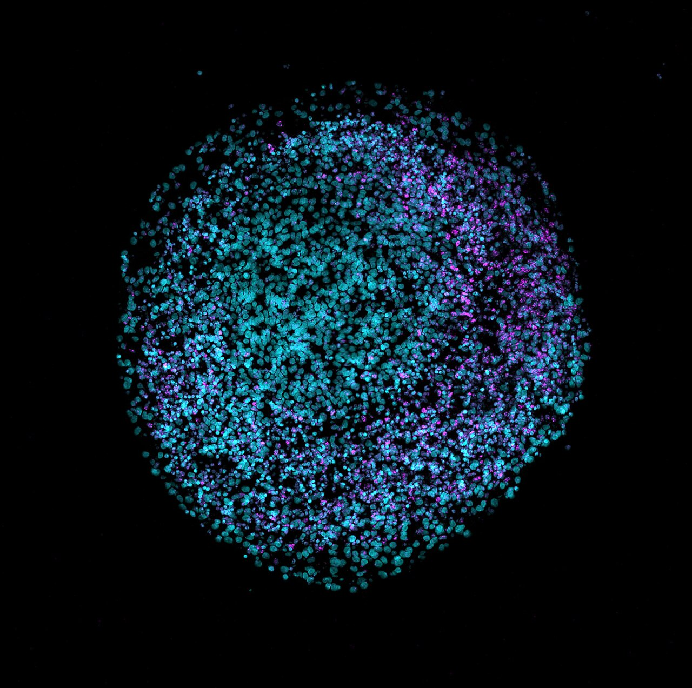
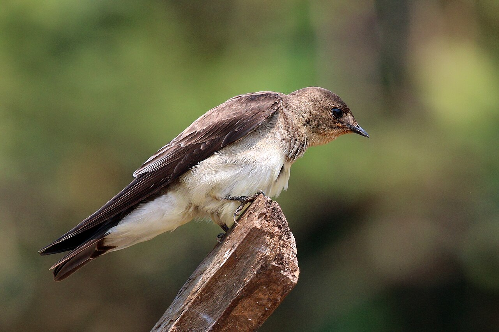
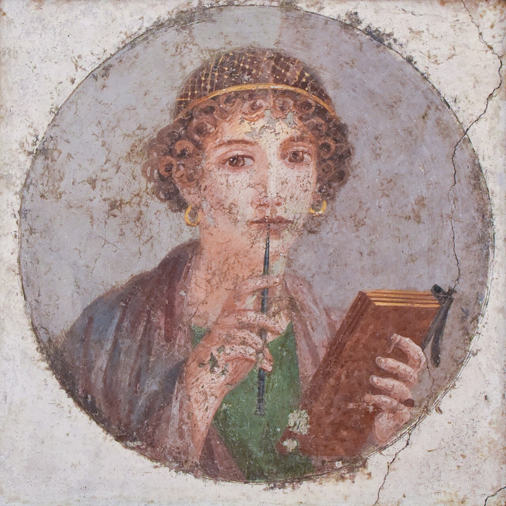
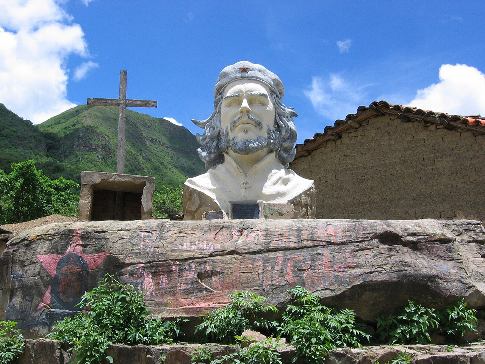
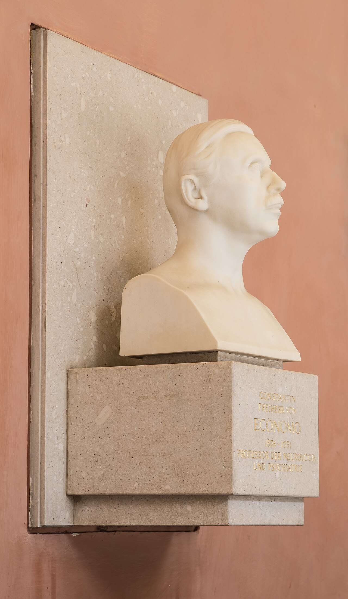

diario de la mañana — el mundo, tu ciudad y lo que te asombra
Nº 9Viernes 9 de octubre de 2026Buenos Aires≈ 35 min de lectura
Tapa: Dmitri Shostakóvich. Hoy a la noche, su Quinta sinfonía en el Palacio Libertad. Es viernes de música clásica. Foto: Fotothek_df_roe-neg_0002792_002_Portrait_Dmitri_Dmitrijew… · CC BY-SA 3.0 de · Wikimedia CommonsMúsica clásica
Buen día. En dos días la Academia Sueca y el Comité Noruego eligieron a dos mujeres: Anne Carson, la poeta que traduce a Safo, y Navi Pillay, la jueza que logró que la violación se juzgara como genocidio. Hoy es viernes de música, y la obra del día es una que se escribió con miedo: la Quinta de Shostakóvich, que la Filarmónica toca esta noche. En ciencia, unos ratones con casi toda la corteza humana. Y para cerrar la semana, un curd de limón.
11° / 16°Cubierto y fresco, con lluvia débil (30 % de probabilidad, casi nada de agua). Un día de campera.
Navi Pillay. Foto: US Mission Geneva · Public domain · Wikimedia Commons
El Comité Noruego premió a Navanethem «Navi» Pillay, de 85 años, «por promover la paz y el derecho internacional». Hija de un chofer de colectivo de Durban, de origen tamil, fue la primera mujer no blanca con estudio de abogada propio en Natal, defendió a militantes contra el apartheid y fue jueza del Tribunal Penal Internacional para Ruanda y, después, Alta Comisionada de la ONU para los Derechos Humanos. El comité tardó en encontrarla: su presidente le pidió en vivo que «por favor atienda» si veía una llamada de Noruega.
Por qué importa: en 1998, en el caso Akayesu, el tribunal que ella integraba estableció por primera vez que la violación puede constituir genocidio. «La violación ya no es un trofeo de guerra», dijo entonces. Es el premio del 125.º aniversario del Nobel de la Paz, y va al derecho como herramienta para frenar la guerra.
Poeta, ensayista y profesora de griego clásico, nacida en Ontario en 1950. La Academia Sueca la premió por «una obra audaz e inventiva que, en diálogo juguetón con la tradición clásica, ha creado nuevas formas para la literatura contemporánea». Es la mujer número 19 entre los 122 premiados. Mezcla géneros: Autobiografía de Rojo es una novela en verso sobre un monstruo de Estesícoro; Nox es una caja-acordeón con un poema de Catulo, para su hermano muerto. Y tradujo a Safo, como vas a ver en el clásico de hoy.
El partido Republicanos anunció su apoyo a Flávio Bolsonaro para la segunda vuelta del 25 de octubre, y ya circulan las primeras encuestas del mano a mano. Republicanos es el partido del gobernador de São Paulo, Tarcísio de Freitas, uno de los dirigentes más votados de la derecha.
ChileInundaciones en Santiago, y Bachelet no descarta volver
Michelle Bachelet. Foto: Gobierno de Chile. · CC BY 3.0 cl · Wikimedia Commons
Lluvias fuertes de primavera inundaron calles de Santiago y del centro-sur, con cortes de luz y casas anegadas. En la política, la expresidenta Michelle Bachelet dijo en una entrevista que no descarta una tercera candidatura presidencial.
Unión Europea · ChinaŠefčovič, en Pekín
Maroš Šefčovič. Foto: Xavier Lejeune · CC BY 4.0 · Wikimedia Commons
El comisario europeo de Comercio, Maroš Šefčovič, tenía previsto reunirse ayer y hoy en Pekín con el ministro chino Wang Wentao. Bruselas puso octubre como plazo para lograr «resultados tangibles»: el déficit comercial con China es récord, y en la mesa están las tierras raras, las exportaciones chinas baratas y el acceso de las empresas europeas a ese mercado.
Argentina y Buenos Aires no vivir adentro de un táper
AySA, por menos de lo esperado
Un consorcio local ofreció US$340 millones por el agua del AMBA
Se abrieron los sobres. El consorcio de Rowing, Arcos, Transclor y PHX ofreció US$340,2 millones por el 90 % de AySA; el grupo Roggio, US$285 millones. Las dos ofertas quedaron por debajo de los US$450 millones que esperaba Economía. Todavía falta la evaluación formal y la adjudicación, y el nuevo operador tomaría el control entre enero y febrero de 2027. El contrato exige invertir al menos US$2.000 millones en los primeros cinco años y unos US$15.000 millones en los 30 años de concesión.
Para pensar: lo que pagan por las acciones es mucho menos que lo que se comprometen a invertir. La clave está en cómo se van a financiar esas obras: con tarifas, con deuda o con ambas.
Jubilaciones de octubre
La mínima es de $435.748,51, y con el bono de $70.000 llega a $505.748,51. Hoy cobran los haberes mínimos con DNI terminado en 1.
Luján se prepara para el Papa
La basílica de Luján va a ser el lugar donde León XIV cierre su viaje por la Argentina, con una misa multitudinaria, entre el 8 y el 11 de noviembre.
Para esta noche
Filarmónica de Buenos Aires en el Palacio Libertad (Sarmiento 151), a las 20: Quinta sinfonía de Shostakóvich y las Danzas polovtsianas de Borodin, con el Coro Polifónico Nacional y la dirección de Carlos Vieu, por los 80 años de la orquesta. Es la obra de la sección del día.
Para agendar: la Filarmónica de Berlín toca en el Colón el miércoles 21 de octubre.
Ciencia nivel colega
Xenocorticación: ratones con el 92 % de la corteza hecha de tejido humano
Los organoides corticales humanos (hCO) tienen un techo: sin vasculatura ni aferencias, se necrosan en el centro y no maduran más allá de un estadio fetal. Por eso el grupo de Sergiu Pașca (Stanford) venía trasplantándolos en la corteza de ratas recién nacidas, donde se vascularizan y reciben inervación talámica (Nature, 2022). El límite era el espacio: el organoide competía con la corteza del huésped. En el trabajo que sale en el número de Nature del 8 de octubre (Kaganovsky, Kelley y colaboradores), primero vaciaron el lugar.

Un organoide cerebral humano, visto con microscopía de fluorescencia. Foto: Nreis1 · CC BY 4.0 · Wikimedia Commons
Diseño
Ratones «apaliales»: deleción condicional de Esco2, el factor de cohesión de cromátidas hermanas, en las células que expresan Emx1, el marcador del palio dorsal y medial. Sin cohesión, los progenitores corticales mueren por fallas en la mitosis, y el animal nace sin la mayor parte del neocórtex y del hipocampo. Todo sobre fondo SCID (inmunodeficiente), para que no rechace el tejido humano.
Trasplante neonatal: organoides corticales derivados de células madre pluripotentes humanas, injertados en la cavidad cortical vacía.
Lecturas: volumetría del injerto, scRNA-seq y morfología, trazado de conexiones, comportamiento espontáneo y un desafío de hipoxia.
Resultados
A los 3 meses, el injerto humano ocupa el 91,9 % del volumen cortical total (n = 7 ratones).
Hay tres veces más neuronas de proyección extratelencefálicas de capa 5 (L5-ET) que en los trasplantes anteriores, y aparecen células con rasgos moleculares y morfológicos de neuronas de von Economo, un tipo neuronal que no se había logrado in vitro (más en el asombro de hoy).
Comportamiento: la locomoción se conserva, con diferencias selectivas en la coordinación de los miembros y en la organización del comportamiento espontáneo.
Hipoxia (5 % de O₂ durante 5 horas): HIF1α se acumula en el injerto humano y no en el paleocórtex murino vecino. Es un modelo para estudiar la lesión hipóxica del cerebro humano en desarrollo, como la encefalopatía del prematuro.
Lectura crítica
Los propios autores advierten que la conectividad anatómica no demuestra integración funcional de vías específicas. Que haya axones no quiere decir que el circuito «computa» como una corteza.
No es una corteza humana normal: no está demostrado que reproduzca la citoarquitectura en seis capas, la escala temporal es la del ratón (el desarrollo humano tarda años) y no hay microglía humana, porque la aporta el huésped.
El fondo SCID impide estudiar la interacción con el sistema inmune, que es central en neurodesarrollo y neurodegeneración.
Bioética: es la pregunta más fuerte. Con el 92 % de la corteza humana, ¿cambia el estatus moral del animal? Ya hay propuestas de un marco ético específico para estos «quimerismos» neurales. Para una tesis o un posdoc en el tema, el comité de ética va a ser parte del diseño.
La conexión con lo que estudiás
Es un ejemplo de manual de complementación de nicho: generar un «hueco» genético en el huésped para que las células donantes lo llenen sin competencia. Es la misma lógica de la complementación de blastocisto, con la que se intentan cultivar páncreas o riñones humanos en cerdos (deleción de Pdx1 o de Sall1), y del trasplante de células madre hematopoyéticas en ratones NSG irradiados. La elección de Esco2 es elegante: es un gen esencial, así que su deleción con Cre bajo Emx1 mata solo a ese linaje.
Biotec en el mundo real · Stämm: un biorreactor del tamaño de una impresora
Los biorreactores tradicionales: tanques de acero agitados. Foto: RickLawless (talk) (Uploads) · CC BY 3.0 · Wikimedia Commons
Stämm es una startup de Buenos Aires fundada en 2016 por Juan Francisco «Yuyo» Llamazares Vegh y Federico D'Alvia Vegh. Quiere reemplazar el tanque agitado de acero, el corazón de cualquier planta de biológicos, por un biorreactor microfluídico de escritorio, hecho con impresión 3D. En 2022 cerró una ronda Serie A de US$17 millones (unos US$20 millones en total, con inversores como SOSV, Draper Associates y Grid Exponential), y anunció que había empezado a producir anticuerpos monoclonales.
El problema que ataca: en un tanque agitado, el cuello de botella es la transferencia de oxígeno (el kLa). Para oxigenar a altas densidades celulares hay que agitar y burbujear más, y eso genera estrés de corte y daño celular por la ruptura de burbujas en la superficie, sobre todo con células de mamífero como las CHO.
La propuesta: una red densa de microcanales que lleva nutrientes y oxígeno por difusión a distancias cortas, con flujo laminar y sin burbujas. Es perfusión intensificada: densidades celulares más altas en menos volumen. La empresa informó que obtenía cinco veces más concentración de anticuerpo que con métodos convencionales (es un dato propio, sin publicación revisada por pares).
El cambio de modelo: escalar «hacia afuera» (más unidades en paralelo) en vez de «hacia arriba» (tanques más grandes). Eso permite plantas chicas y distribuidas, cerca de donde se usa el producto.
Lo que falta ver: la consistencia lote a lote, la validación GMP y el costo por gramo frente a un tanque de 2.000 L de un solo uso. Los datos públicos son de 2022.
Salida laboral: ingeniería de bioprocesos, desarrollo de procesos upstream y analítica de anticuerpos. Fijate el hilo con Milstein, de ayer: anticuerpos monoclonales, hechos en Buenos Aires.
Ciencia en la vida cotidiana · La piel de gallina con la música
Ese escalofrío que te recorre la espalda en un momento de una obra tiene nombre: frisson. En 2011, Valorie Salimpoor y Robert Zatorre (Universidad McGill) lo midieron con PET y [¹¹C]raclopride, un antagonista de los receptores D2 que compite con la dopamina endógena: si se libera dopamina, la unión del radioligando baja. Resultado: en los momentos de máximo placer hay liberación de dopamina en el núcleo accumbens, y unos segundos antes, en la anticipación, en el núcleo caudado. Con fMRI vieron la misma separación temporal. La música no es comida ni sexo, pero usa el mismo sistema de recompensa, con una vuelta: la dopamina se libera sobre todo por la predicción, por esperar que algo llegue.
Probalo esta noche: en el final de la Quinta, cuando vuelve el tema en re mayor con los timbales. Salimpoor et al., Nature Neuroscience 14, 257–262 (2011), doi:10.1038/nn.2726.
Mirá a tu alrededor flor y ave de la semana
La flor del mburucuyá y las golondrinas que vuelven
La flor del mburucuyá. Foto: Petar Milošević · CC BY-SA 4.0 · Wikimedia Commons

Golondrina doméstica. Foto: Charles J. Sharp · CC BY-SA 4.0 · Wikimedia Commons
La flor: mburucuyá
Nombre científico
Passiflora caerulea (Pasifloráceas), nativa del Río de la Plata
Dónde
Enredadera de rejas, alambrados y medianeras. La flor dura un solo día.
Cómo reconocerla
Cinco sépalos y cinco pétalos blancos, una corona de filamentos violetas, blancos y azules, cinco estambres y tres estigmas en cruz. Los misioneros jesuitas vieron en ella la Pasión de Cristo (la corona de espinas, los clavos, las llagas), y de ahí su nombre: pasionaria.
Dato
Su fruto, naranja y ovalado, es comestible pero insulso. Es pariente de la Passiflora edulis, el maracuyá. Sus hojas son el alimento de las orugas de la mariposa espejito.
El ave: golondrina doméstica
Nombre científico
Progne chalybea (Hirundínidos)
Por qué ahora
Es migratoria: pasa el invierno en la Amazonia y vuelve a Buenos Aires en primavera para criar. Si en estos días ves golondrinas, acaban de llegar.
Cómo reconocerla
Unos 18 cm, dorso azul acerado brillante, pecho gris pardo y vientre blanco. Vuela en círculos cazando insectos al vuelo y anida en huecos de edificios, cornisas y techos.
El dicho
«Una golondrina no hace verano»: viene de Aristóteles, en la Ética a Nicómaco.
Tu misión de hoy
Receta de estación limones de primavera · con su química
Curd de limón
Una crema ácida para untar en tostadas, rellenar una tarta o comer a cucharadas. Quince minutos.
Curd de limón. Foto: Ewelina Podrez-Siama · CC BY 2.0 · Wikimedia Commons
Ingredientes (un frasco)
3 limones (jugo y ralladura)
3 huevos
150 g de azúcar
80 g de manteca fría, en cubos
Pasos
Batí los huevos con el azúcar, la ralladura y el jugo en una olla chica, sin espumar.
Cociná a fuego bajo, revolviendo siempre, hasta que espese y cubra la cuchara (unos 8 minutos). No tiene que hervir.
Fuera del fuego, incorporá la manteca de a poco, batiendo.
Colalo, pasalo a un frasco y enfrialo: espesa más en la heladera. Dura una semana.
La química de la receta
Por qué espesa: las proteínas del huevo (ovoalbúmina, ovotransferrina y las lipoproteínas de la yema) se desnaturalizan con el calor y forman una red tridimensional que atrapa agua: un gel. Lo que lo diferencia de un huevo revuelto es la velocidad.
Por qué no se corta: el azúcar sube la temperatura de coagulación, porque las moléculas de sacarosa se interponen entre las cadenas desplegadas y retrasan su agregación. El ácido (pH cercano a 3) carga positivamente a las proteínas, que se repelen y forman una red más fina y uniforme, en vez de grumos. Por eso el curd espesa recién alrededor de 75 a 80 °C y queda liso.
La manteca al final, fría: se emulsiona en la fase acuosa, estabilizada por los fosfolípidos de la yema (lecitina). Si se agregara con el fuego fuerte, la grasa se separaría.
Un clásico en cinco minutos
Safo, fragmento 31: el poema que tradujo la Nobel de ayer
Lesbos, alrededor del 600 a. C. Traducción propia, a partir del griego.

El fresco de Pompeya conocido como «Safo». Foto: Joel Bellviure · CC BY 4.0 · Wikimedia Commons
Me parece igual a los dioses ese hombre que se sienta frente a vos y escucha de cerca tu voz dulce y tu risa que enamora.
Eso, te juro, me sobresalta el corazón en el pecho: apenas te miro un instante, ya no puedo decir nada,
se me quiebra la lengua, un fuego leve me corre enseguida bajo la piel, con los ojos no veo nada, me zumban los oídos,
me cae un sudor frío, un temblor me toma entera, estoy más verde que el pasto, y me parece que estoy a poco de morirme.
Para entrar al poema
Cómo llegó hasta nosotros: de los nueve libros de Safo sobrevive casi nada. Este poema se salvó porque un crítico griego del siglo I, el llamado Longino, lo citó en Sobre lo sublime como ejemplo de cómo describir una pasión.
Lo que hace: en vez de decir «estoy enamorada», hace una lista clínica de síntomas: taquicardia, afonía, calor, visión borrosa, acúfenos, sudor, temblor y palidez. Es el amor descripto como una reacción del sistema nervioso autónomo.
El puente con Carson: en If Not, Winter (2002), Carson tradujo todos los fragmentos de Safo y dejó los corchetes donde el papiro está roto, para que se vea el agujero. Esa idea, que el hueco también es parte del texto, atraviesa toda su obra.
Para los griegos, symphōnía era el acuerdo de sonidos, la consonancia: que dos voces suenen bien juntas. En la Edad Media el nombre pasó a un instrumento (la zanfoña, que viene justamente de symphonia), y en el Barroco a los preludios orquestales de las óperas, las sinfonie italianas. Recién con Haydn, en el siglo XVIII, la sinfonía se volvió la gran obra para orquesta en cuatro movimientos que conocemos.
Fijate la familia: de phōnḗ vienen teléfono, micrófono, fonema y polifonía. El coro que canta esta noche con la Filarmónica se llama, justamente, Polifónico.
Le français du matin semana 2: la hora y los días
Aujourd'hui, c'est vendredi
Para cerrar la semana: hoy, mañana y a qué hora. Escuchalo dos veces.
Aujourd'hui, c'est vendredi.
Le concert est à huit heures.
Demain, c'est samedi. J'étudie.
Bon week-end !
Aujourd'hui, c'est vendredi.
Hoy es viernes. [o-yur-DÜI, se van-drə-DÍ]
le concert
el concierto [lə kon-SER]
Demain
Mañana (el día siguiente) [də-MAN]
samedi · dimanche
sábado · domingo [sam-DÍ · di-MANSH]
Bon week-end !
¡Buen fin de semana! [bon ui-KEND]
Un truco
Los días de la semana tienen los mismos planetas que en castellano: lundi (Luna, lunes), mardi (Marte, martes), mercredi (Mercurio), jeudi (Júpiter), vendredi (Venus). Y en francés se escriben con minúscula, como en castellano. Ojo: «mañana» como parte del día es le matin; «mañana» como el día siguiente es demain.
À toi:
English corner level C1 · literary profile
The poet of the missing pieces
Anne Carson has spent half a century refusing to stay in her lane. A professor of ancient Greek by trade, she has published novels in verse, essays disguised as poems, an opera libretto and, in Nox, an elegy for her brother that arrives folded into a box like an accordion. Critics have long struggled to pin her down, and the Swedish Academy, in awarding her this year's Nobel Prize in Literature, seemed to concede the point, praising work that has "created new forms for contemporary literature".
At the heart of it all lies an abiding fascination with fragments. When Carson set about translating Sappho, whose nine books survive only in scraps of papyrus and stray quotations, she resisted the temptation to paper over the gaps. Instead, she left the brackets on the page, so that readers could feel the weight of what has been lost. The result reads less like a restoration than an excavation: you see the poem and the hole in the ground at the same time.
Carson is notoriously reluctant to explain herself, and her readers have learned to take her on her own terms. Perhaps that is fitting for a writer who has made a career out of the eloquence of absence.
to stay in one's lane — no salirse de lo suyo, quedarse en su carril
by trade — de oficio, de profesión
to pin someone down — definir, encasillar a alguien
to concede the point — dar la razón, admitir
abiding — perdurable, constante
to paper over — disimular, tapar (un problema)
notoriously — conocidamente (con matiz negativo)
on one's own terms — según sus propias reglas
Your turn (answer in English):
Viernes de música clásica
Shostakóvich, Sinfonía n.º 5 en re menor, op. 47 (1937)
La sinfonía de un hombre que dormía vestido, con una valija preparada junto a la puerta. Unos 45 minutos.
El 26 de enero de 1936, Stalin fue al Bolshói a ver Lady Macbeth del distrito de Mtsensk, la ópera de un Shostakóvich de 29 años que llevaba dos años de éxito. Se fue antes del final. Dos días después, Pravda publicó un editorial sin firma: «Caos en lugar de música». Acusaba a la ópera de «formalista», «burguesa» y «vulgar», y terminaba con una amenaza: esto «puede terminar muy mal». Eran los años del Gran Terror. Varios conocidos del compositor fueron arrestados o fusilados. Shostakóvich retiró su Cuarta sinfonía, ya en ensayos, y escribió otra.
Yevgueni Mravinski, que la estrenó. Foto: Unknown authorUnknown author · Public domain · Wikimedia Commons
La Quinta se estrenó el 21 de noviembre de 1937 en Leningrado, con la Filarmónica dirigida por Yevgueni Mravinski. Hubo gente que lloró en el tercer movimiento. Al final, la ovación duró más de media hora (Rostropóvich hablaba de 40 minutos), y Mravinski levantó la partitura por encima de su cabeza. El régimen la aceptó como «la respuesta creativa de un artista soviético a una crítica justa». La pregunta que sigue abierta es si el final es un triunfo o una burla.
Guía de escucha
I. Moderato (≈ 15'). Empieza con un gesto áspero de las cuerdas en canon, saltos de sexta que suben y bajan. Después, un segundo tema lírico de los violines sobre un acompañamiento de acordes largos. En el desarrollo entra el piano en los graves con los metales: es una marcha que se vuelve mecánica, militar. Al final, flauta y corno dialogan, y la celesta cierra con unas notas sueltas, como gotas.
II. Allegretto (≈ 5'). Un scherzo con forma de vals torcido. Los cornos y los fagotes pisan fuerte, y un violín solo hace una parodia de salón. Es Mahler pasado por el sarcasmo.
III. Largo (≈ 14'). El corazón de la obra. Sin metales. Las cuerdas divididas en hasta ocho partes, y solos de oboe, clarinete y flauta sobre el arpa. Es un réquiem sin palabras, y en 1937 todos sabían por quién. Es el movimiento donde lloraba el público del estreno.
IV. Allegro non troppo (≈ 11'). Los timbales y los metales arrancan en re menor, rápido y fuerte. En el medio, una calma larga con una cita de su propia canción sobre un poema de Pushkin, «Renacimiento». Y el final: re mayor, timbales martillando la misma nota y la orquesta repitiendo un la, más de 250 veces. ¿Celebración o una alegría forzada a golpes? En el libro Testimonio (de autenticidad discutida), Shostakóvich habría dicho que es «como si alguien te pegara con un palo y te dijera: tu deber es alegrarte».
El Palacio Libertad, el antiguo Palacio de Correos, donde toca hoy la Filarmónica. Foto: Sombra Inquieta · CC BY-SA 4.0 · Wikimedia Commons
Para escucharla
En vivo, hoy: Filarmónica de Buenos Aires, Carlos Vieu, Palacio Libertad (Sarmiento 151), 20 h. En el mismo programa, las Danzas polovtsianas de Borodin con el Coro Polifónico Nacional (la melodía de «Stranger in Paradise» sale de ahí).
En grabación: Mravinski con la Filarmónica de Leningrado, el director del estreno. Prestá atención al tempo del final: algunos directores lo toman lento y pesado, y otros, rápido y triunfal. Cambia el sentido de la obra.
Hoy en la historia · un lugar en el mapa
9 de octubre de 1967: el Che muere en La Higuera
Ernesto Guevara, nacido en Rosario en 1928, había llegado a Bolivia en noviembre de 1966 con documentos falsos para armar un foco guerrillero. La campaña fracasó: no consiguió el apoyo de los campesinos ni del Partido Comunista boliviano, y el grupo quedó aislado. El 8 de octubre fue herido y capturado por el ejército boliviano en la quebrada del Yuro. Lo llevaron a la escuelita de La Higuera, y al mediodía del 9 lo ejecutaron por orden del gobierno de René Barrientos. Tenía 39 años. Su cuerpo se exhibió en la lavandería del hospital de Vallegrande y después se enterró en secreto; los restos aparecieron recién en 1997.
La foto de su cuerpo en Vallegrande, tomada por Freddy Alborta, se volvió una de las imágenes más reproducidas del siglo XX.
Esta semana, en Rosario, circula en el Concejo un proyecto para preservar las referencias al Che en su ciudad natal, con firmas como la de Adolfo Pérez Esquivel, el otro Nobel de la Paz argentino.
El lugar: La Higuera, Bolivia

Un monumento al Che Guevara. Foto: Its author is Augusto Starita. · CC BY-SA 3.0 · Wikimedia Commons
Dónde
En el departamento de Santa Cruz, Bolivia, a unos 2.000 metros de altura, entre las serranías del sudeste. El pueblo más cercano es Vallegrande.
Hoy
Un caserío de unas pocas decenas de habitantes. La escuelita es un museo, y la zona es parte de la «Ruta del Che», un circuito turístico.
Conexión
Una ejecución sin juicio. Lo que defendió Pillay toda su vida es lo contrario: que la violencia política la juzgue un tribunal.
Lo que me asombra hoy
Las neuronas de von Economo, solo para cerebros grandes y sociales

Constantin von Economo. Foto: Hubertl · CC BY-SA 4.0 · Wikimedia Commons
En 1926, el neurólogo austríaco Constantin von Economo describió unas neuronas raras en la corteza cingulada anterior y en la ínsula frontal: grandes, alargadas, como husos, con un solo axón y una sola dendrita gruesa. A diferencia de las piramidales, que tienen un árbol de dendritas, estas parecen hechas para transmitir rápido y lejos. Durante décadas se creyó que eran exclusivas de los humanos y de los grandes simios.
Después aparecieron en ballenas jorobadas y cachalotes, en delfines y en elefantes: animales de cerebro grande y vida social compleja, que evolucionaron por caminos separados. Están justo en las regiones del cerebro que se activan con la empatía, la vergüenza o el registro de un error. Y en la demencia frontotemporal son de las primeras neuronas en morir. Hasta ahora no se las podía estudiar en vivo. En los ratones con corteza humana de la ciencia de hoy aparecieron células muy parecidas.
Pasatiempo sudoku · nivel medio
Para el viernes a la noche
Completá cada fila, cada columna y cada caja de 3×3 con los números del 1 al 9, sin repetir. Tiene una sola solución.
15534674596849572516432526581968
Cuaderno para repasar lo de hoy
Repaso y quiz de la mañana
Repaso de idiomas
Quiz
¿Qué gen delecionaron en los progenitores Emx1+ para generar los ratones apaliales?
¿Por qué se usaron ratones SCID?
¿Qué parámetro limita la oxigenación en un tanque agitado?
En el estudio del frisson, ¿qué región libera dopamina en el momento de máximo placer?
¿Por qué el curd de limón no se corta?
¿De dónde vuelve la golondrina doméstica en primavera?
¿Qué editorial de Pravda atacó a Shostakóvich en 1936?
¿En qué caso un tribunal internacional dijo por primera vez que la violación puede ser genocidio?
«Demain, c'est samedi» significa…
«To paper over» significa…
Escritura: tres líneas para hoy
Soluciones tocá para destapardadas vuelta, para no espiar
Quiz: Esco2 · para que no rechacen el tejido humano · el kLa · el núcleo accumbens · el azúcar y el ácido · de la Amazonia · «Caos en lugar de música» · Akayesu · mañana es sábado · disimular.
Repaso: il est midi · j'ai vingt ans · comment ça va ? · irónico, con humor seco · marchitarse, decaer · autocomplacencia, exceso de confianza.

.jpg){kind=link}
.JPG){kind=link}